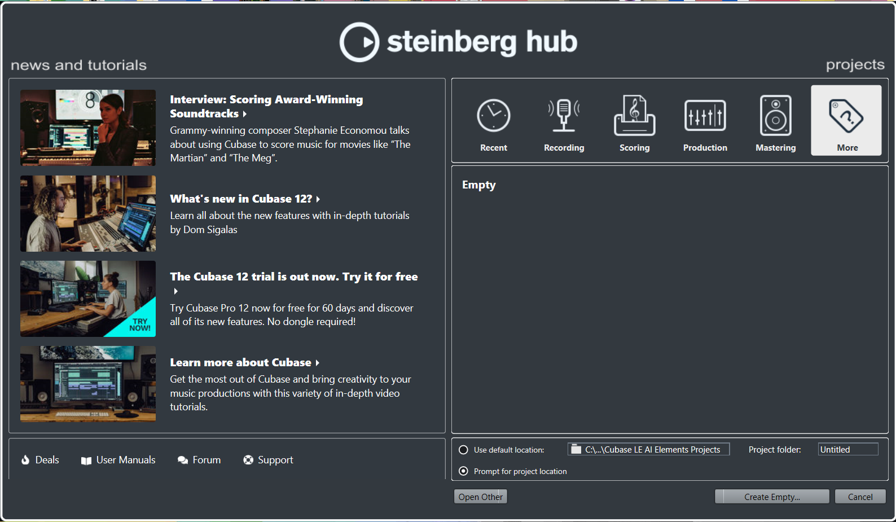
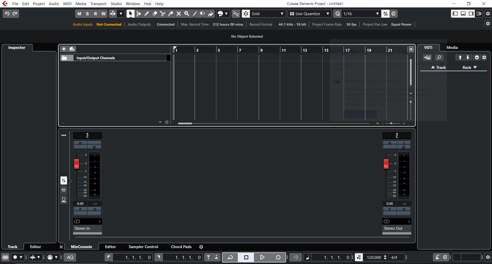

.png)
.png)
.png)
Thanks for checking out my Cubase LE AI Elements 11 Beginner's Guide! Hopefully you find the information I provide helpful in jumpstarting your passion for creating sound. Note that some of this information may be applicable to other versions of Cubase, however I will not be covering other versions in this guide because LE AI Elements 11 is my prefered version. Before we get started, we need to cover some preliminary info before we can start the guide.
You can pick up a copy of Cubase off of their website, digital or physical, the differences are very minimal but I will mention them
Download Cubase, I reccomend downloading any additional files it suggests unless they seem completely unecessary, and run the program
When first starting Cubase, you will likely get prompted on what audio interface you are currently using. We will come back to this later in the tutorial but if you don't know what to do, just pick the default interface for your device. Anyways, this is what information is given to you on the startup screen: most of which is not important for the scope of this tutorial but we will go through anyways.
The information on the left side is fetched from the Cubase website and usually is articles or news promoted by Cubase. On the right we have our many options for creating a new project, the following tabs are breakdowns of what each offers though we will focus on creating an Empty project from here on.
Hold on! Don't go creating that project right away, make sure you have your project file destination folder set to where you want everything to be saved. I created a file on my desktop for this so I can quickly access the project files, but keep in mind that this folder can get pretty large so definitely don't select the desktop as the folder! This project folder will keep track of various things like recorded audio files, any screenshots you take, mixdowns and more.
Once that's taken care of, create an empty project. It should take you to a screen that looks like this:
Now there's a lot going on in this photo, but we're going to break it all down slowly so you can get comfortable. Let's start at the top with the menu bar, and we'll highlight notable and important features for the beginner.
This is where we create new files, save existing files, export and import media, and even perform handly functions like saving and recovering backups of our projects. Remember to save your work often with the shortcut Ctrl+S, and make backups of projects as well, we never want to lose our precious creation!
This has a ton of features, and they can vary depending on what wer are currently selecting, so for the most part there isn't much to mention. Most if not all important Edit functions can be accessed in other ways that we will get into, but it is worth mentioning this is where we can change preferences about the project.
This contains a lot of miscellaneous information about our project, like hiding or showing all automation on all tracks. There's a lot of cool stuff to go through here, but a very useful link is the Project Setup section, which takes us to many configurations of the project. Here we can adjust our project length, framerate of project, and even the file format we output. Having the correct file format can super important, and I reference this part a lot.
Similar to the Edit tag, this info is only useful and/or available when we are currently selecting an audio file in our project. You can edit the file in many useful ways here, such as resampling, reversing, muting, and so much more. Once you have audio files in your project, refer back to this tab and experiment with the many editing features.
This is for features related to MIDI instruments. If you don't know what these are or don't plan on using them, you can skip over this. This is useful for configuring aspects of your MIDI instrument, but most of these functions can be done elsewhere.
This tab is for importing specific content types or content from certain formats, such as locating and importing data from a cd for example. For a beginner, this tab is pretty irrelevant but still worth mentioning.
This tab refers to the content you see at the very bottom of your screen, which is known as the transport panel. We will go over the features of this later, but just know that the same actions that can be taken there are available here aswell.
This is the most important tab, especially for beginners. Here you can access the Studio Setup as well as anage your audio connections with the hotkey f4. These features are crucial to basic setup and here is the first place you should look if something is going wrong.
Not a lot to say about this tab, this tab helps you keep track of multiple windows in the project space, which is useful if you have multiple projects open.
This tab can take you back to the startup menu that we saw earlier, which is nice if you want to start a project but cannot find the startup menu.
This can quickly take you to online and offline help menus, where you can get into the nitty-gritty of all the little details and features of this wonderful program. The scope of this tutorial should set you up for what you need, but these menus can fill in all the details.
Before we can truly get started, we have to perform a little bit of maintenance to make sure ourr studio is all in working order. It's hard to know what is and what isn't going to work immediatley when you start your project, but usually it comes down to a few different possibilities.
There are a number of different types of audio tracks available to add to the project, and we can start by right clicking in the section just below our input/output channels.
.png)
You'll see that we can create all sorts of channels, but most of these are likely too complex or simply irrelevant to a beginner. For now let's focus on:
That's all! From here on you should have all the necessary tools to get a project started and get the ideas flowing. This can all be very daunting to take in, and the undertaking of a single project can be intense, so here are some example photos of tracks of mine to give you a sense of what your project will eventually look like:
Indigo Peaks - My Hands Are Full - June 2022 Indigo Peaks - Carolina Blue - October 2021 Indigo Peaks - Falling Rock - August 2018